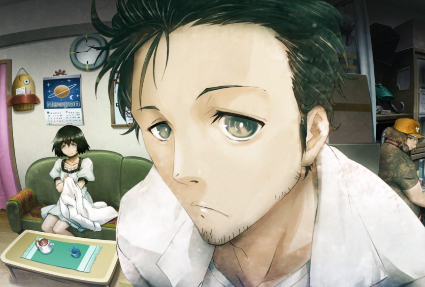

Steins;Gate es la segunda entrega principal de la serie, y fue lanzada originalmente el 15 de octubre de 2009 en Xbox 360, y posteriormente fue porteada a multiples plataformas, que incluyen la Playstation portable (PSP), Playstation Vita, y a PC.
La historia sigue a Okabe Rintaro que, junto a sus amigos Shiina Mayuri y Hashida Itaru, descubre que ha creado por accidente una máquina capaz de enviar mensajes al pasado. Mientras investigan este fenómeno, se topan con la joven y prodigiosa Makise Kurisu, y juntos descubren la verdad tras una conspiración mundial llevada por una organización secreta.
La historia sigue a Okabe Rintaro que, junto a sus amigos Shiina Mayuri y Hashida Itaru, descubre que ha creado por accidente una máquina capaz de enviar mensajes al pasado. Mientras investigan este fenómeno, se topan con la joven y prodigiosa Makise Kurisu, y juntos descubren la verdad tras una conspiración mundial llevada por una organización secreta.

Steins;Gate es la entrega más popular de la serie, por lo que ha recibido una gran cantidad de material extra que complementan la historia principal, incluídos mangas, cd-dramas, novelas ligeras, entre otros.
Steins;Gate recibió una adaptación al anime en el año 2011, la cual fue catalogada como uno de los mejores animes de la década. Esta también es la mejor adaptación que ha recibido alguna entrega de la serie. En el año 2015, MAGES lanzó una novela visual precuela de Steins;Gate llamada Steins;Gate 0. Esta precuela también recibió un complemento en forma de anime en el año 2018.
En el año 2018, Steins;Gate recibió un "Remake" con el nombre de "Steins;Gate ELITE", el cual reemplaza los visuales originales por escenas animadas extraídas de la adaptación del 2011 junto algunas escenas animadas exclusivamente para este remake. No obstante, en general se tiene la percepción de que es una versión inferior de la historia, ya que tiene una versión muy recortada del guion original, mecánicas de jugabilidad recortadas, entre otros problemas.
En octubre de 2020, MAGES anunció que comenzarían el desarrollo de una secuela temática de Steins;Gate, conocida provicionalmente como "Steins;???" dado que no se reveló su nombre completo, pero desde entonces no han habido nuevas noticias al respecto.
Si estás interesado en leer Steins;Gate, la opción más recomendada es comprarlo en Steam y utilizar el parche de mejoras de Committe of Zero para tener la mejor experiencia posible; no obstante, en su lugar también puedes aplicar el parche en español de GateOfSteiner.
Steins;Gate recibió una adaptación al anime en el año 2011, la cual fue catalogada como uno de los mejores animes de la década. Esta también es la mejor adaptación que ha recibido alguna entrega de la serie. En el año 2015, MAGES lanzó una novela visual precuela de Steins;Gate llamada Steins;Gate 0. Esta precuela también recibió un complemento en forma de anime en el año 2018.
En el año 2018, Steins;Gate recibió un "Remake" con el nombre de "Steins;Gate ELITE", el cual reemplaza los visuales originales por escenas animadas extraídas de la adaptación del 2011 junto algunas escenas animadas exclusivamente para este remake. No obstante, en general se tiene la percepción de que es una versión inferior de la historia, ya que tiene una versión muy recortada del guion original, mecánicas de jugabilidad recortadas, entre otros problemas.
En octubre de 2020, MAGES anunció que comenzarían el desarrollo de una secuela temática de Steins;Gate, conocida provicionalmente como "Steins;???" dado que no se reveló su nombre completo, pero desde entonces no han habido nuevas noticias al respecto.
Si estás interesado en leer Steins;Gate, la opción más recomendada es comprarlo en Steam y utilizar el parche de mejoras de Committe of Zero para tener la mejor experiencia posible; no obstante, en su lugar también puedes aplicar el parche en español de GateOfSteiner.